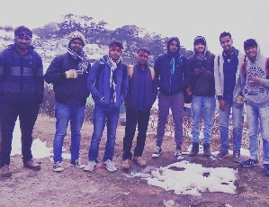
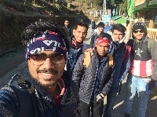

Success!
You just upvoted my work. ;). Thank You.
Abhishek Singh Sophomore year, NIT Durgapur
I am currently pursuing my undergraduate studies from National Institute of Technology Durgapur in the department of Computer Science and Engineering.
The trek to Sandakphu was my first ever trek and believe me, it couldn't have been anymore better. Myself along with 7 of my final year seniors trekked to the top of the peak in four days (which was planned to be actually of 6 days). Memories were made which would be cherished forever.♥
Upvote my Clicks!Take a peek!
Sandakphu The holy grail of Indian Trekking.
Sandakphu, being the highest peak in West Bengal, offers grand views of the world’s tallest peaks. Lhotse and Makalu, the fourth and fifth highest peaks in the world stand tall at 8,516m and 8,463m, trying to outdo the world’s tallest peak. But how can they? After all, the Everest stands between them, towering over everything! On the other hand, Kangchenjunga, the third highest peak, stands with its family at 8,586m.
The Kanchenjunga cluster is famously called The Sleeping Buddha, thanks to its appearance. Mt. Kumbhakarna forms the head and face of Buddha, while Kanchenjunga forms the upper body. The other peaks that make up The Sleeping Buddha are Kokthang, Rathong, Frey, Kabru South, Kabru North, Simvo, Mt. Pandim, Tenzingkhang, Japanu, Narsing.
The route of this trek lies along the border of India and Nepal. In fact, one constantly moves in and out of Nepal during the trek. The mighty mountains, of course, know no boundaries. They stretch through Nepal, India, Bhutan and further.
Some peeks:

The journey to the top of the mountain was not easy, but a good company made it better.
Sandakphu is a wonderland for the trekkers. This is the summit or the highest point in Singalila range as well as in the state of West Bengal, India. The trek route to Sandakphu goes all along the Singalila range and therefore this is also known as Singalila trek.

Why should you go there? Because, why not? :p
So, why do you think the trekkers from all over the world are so fanatic about Sandakphu? The answer is simple.... Where else can you see four of the five highest peaks of the world including Mt. Everest, Makalu, Kanchenjunga, and Lhotse, along with Three Sisters and many other peaks of Nepal, Sikkim, Tibet and Bhutan in one single stretch of snow? Yes, this is what you get to see when you stand on the grounds of Sandakphu.
The trek route passes through the Singalila National Park. So your trek journey is further complemented with a national park that has some of the most fascinating rare animals like Red Pandas and Pangolins. However, rare animals are rarely seen. The national park is also rich with varieties of birds.
Some things to take care of:
Carry sufficient cash
You won't get any ATM's after you reach Manebhanjan, your starting point.
Warm Clothes and other accessories
Do carry sweaters, proper trekking shoes etc.
Memories. ♥
Keep your eyes open and let the nature do it's spell. ;)
Don't forget to hire a giude.
If you are approaching through Manebhanjan, you can get a guide from Highlander Guides and Porters Welfare Association located by the roadside as soon as you enter Manebhanjan.
An advice for novice Like me.
Go slow and keep your spirits high. Coz' it is indeed tiring.
My itinerary
- Day-1: Manebhanjan to Tonglu (11kms), 6-7 Hours Trek
- Day-2: Tonglu to Kalipokhri (15kms), 6-7 Hours Trek
- Day-3: Kalipokhri to Sandakphu (6kms), 3 Hours Trek
- Return: Sandakphu to Srikhola Or Rimbik
★ PS. I spent around 4k on the whole trip. Though we forgot to carry sufficient cash. Hope you do not make the same mistake.